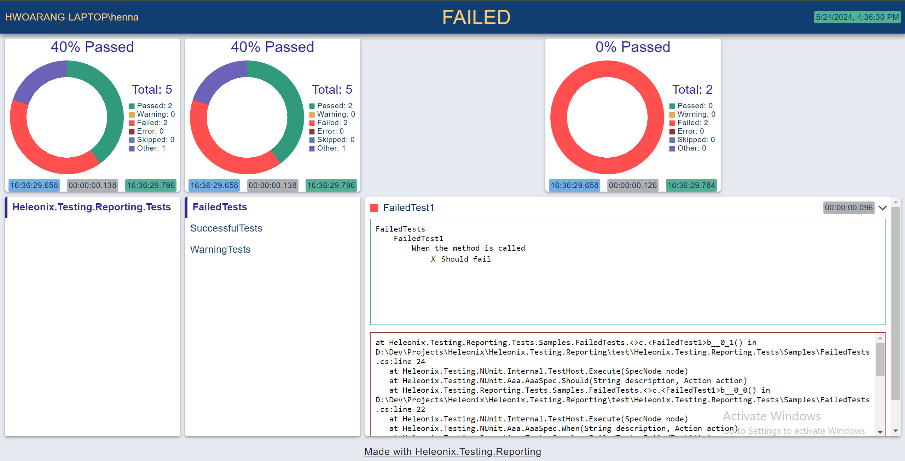
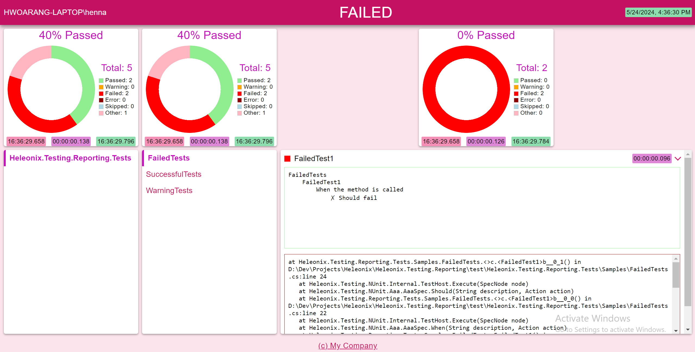

Heleonix.Testing.Reporting

The .NET CLI tool to generate customizable human-friendly reports from technical test results.
Install
https://www.nuget.org/packages/Heleonix.Testing.Reporting
API
See <xref:Heleonix.Testing.Reporting>
Command-line interface
| Option | Description |
|---|---|
| -i, --input <path> (REQUIRED) | Input files to generate reports from |
| -o, --output <path> (REQUIRED) | Path of the output file to store the generated merged report in (see the --merge option) or path of the folder to store multiple generated reports |
| -f, --format <Html> (REQUIRED) | Format of the output report |
| -m, --merge | Determines whether the input files should be merged into a single output report, or every input file should have a separate generated output report |
| -s, --style <variable-name=value> | The key=value pairs to specify custom styling via CSS variables, i.e. colors, for the output reports |
| -c, --content <property.path=value> | The key=value pairs to specify custom content replacements i.e. header or footer, in the output reports. |
| -v, --verbosity <Critical/Debug/Error/Information/None/Trace/Warning> |
Sets the verbosity level for logging [default: Information] |
| --version | Show version information |
| -?, -h, --help | Show help and usage information |
Styles
Possible values for the --style option:
| Format | Values |
|---|---|
| Html | See CSS 3 variables in the Css.css without -- prefixes, i.e.: color-primary, color-secondary etc. |
Styling approaches the M2 Material Design with set of color, typography, shaping and spacing variables.
To simplify your custom styling, you can use Material Design palette tool.
Content
Possible values of the --content option are dotted paths to properties in the Report.cs.
For example: Footer.Text, Footer.Url, Result.Summary.Title, Result.Summary.Owner etc.
Examples
hxreport -i ./TestResult1.trx ./TestResult2.trx -o ./TestResult.html -f Html -m
Converts two TRX test results into a single merged Html output file.
hxreport -i ./TestResult1.trx ./TestResult2.trx -o ./TestResultFolder -f Html
Converts two TRX test results into two Html output files placed in the ./TestResultFolder folder.
Having the Sample.trx,
the following Html report is generated:
hxreport -i ./Sample.trx -o ./Sample.html -f Html

Having the Sample.trx,
the following Html report is generated, using the Material Design palette tool
and the primary #C51162 color:
hxreport -i ./Sample.trx -o ./Sample.html -f Html -s color-primary=#c51162 color-on-primary=#ffffff color-secondary=#c511bc color-background=#fce4ed color-on-background=#c51162 color-on-surface=#000000 color-start=#f48fb6 color-end=#8eddae color-duration=#df87d7 color-passed=lightgreen color-failed=red color-error=darkred color-warning=orange color-skipped=lightblue color-other=lightpink color-undefined=lightgray -c Footer.Text="(c) My Company" Footer.Url="https://my.company.com"

Contribution Guideline
- Create a fork from the main repository
- Implement whatever is needed
- Create a Pull Request. Make sure the assigned Checks pass successfully. You can watch the progress in the PR: .NET GitHub workflows
- Request review from the code owner
- Once approved, merge your Pull Request via Squash and merge
IMPORTANT
While merging, enter a Conventional Commits commit message. This commit message will be used in automatically generated Github Release Notes and NuGet Release Notes - Monitor the Release: .NET / NuGet GitHub workflow to make sure your changes are delivered successfully
- In case of any issues, please contact heleonix.sln@gmail.com